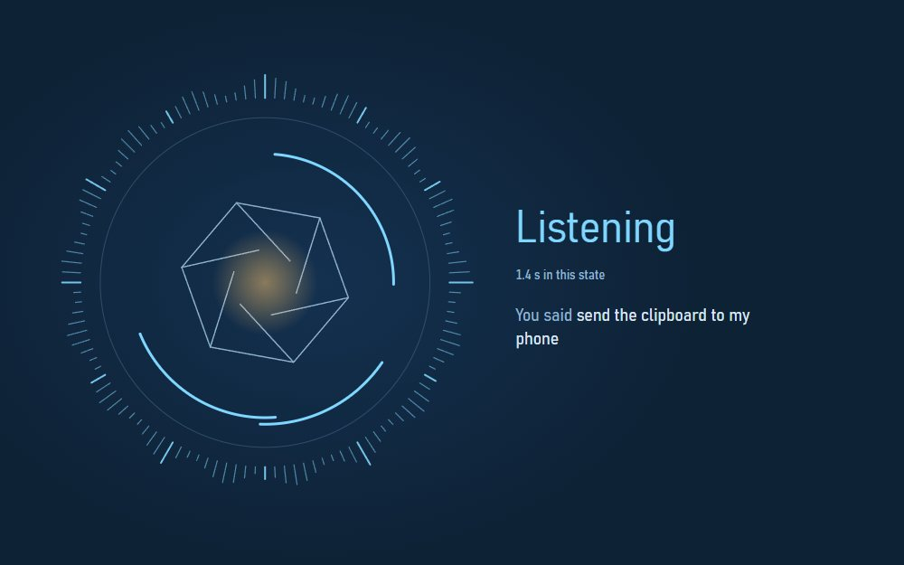
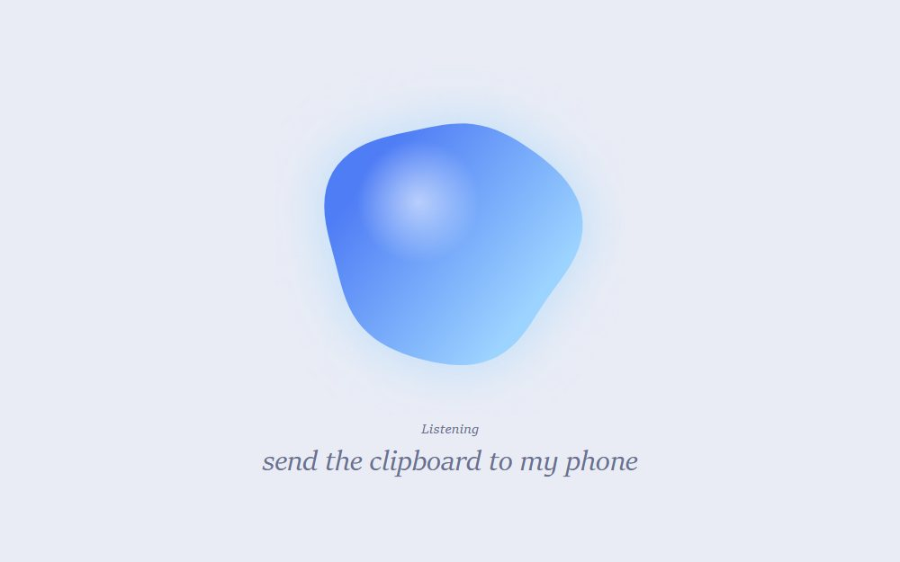
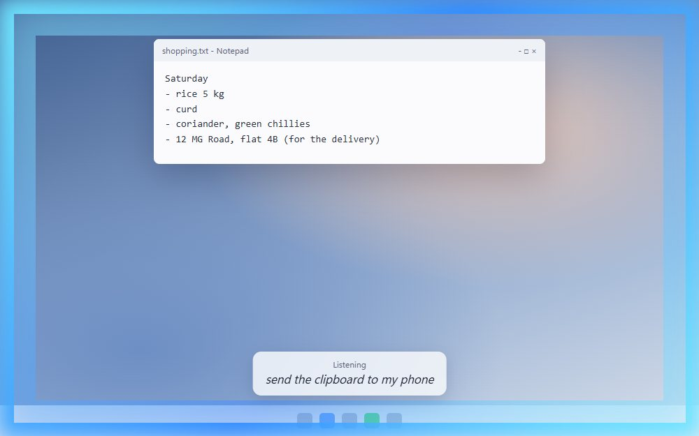
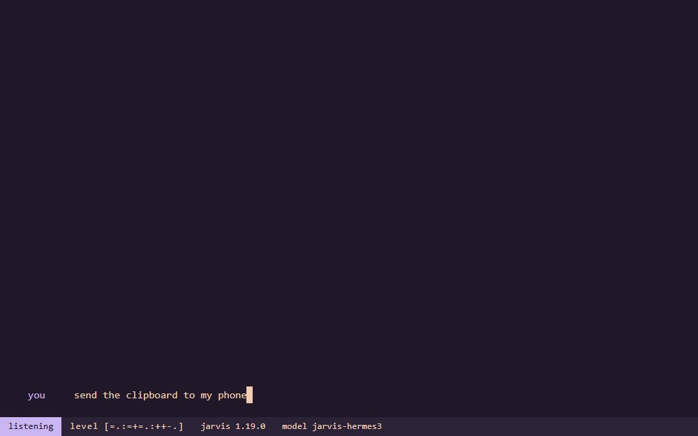
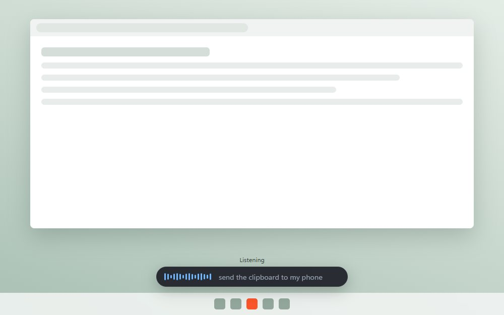
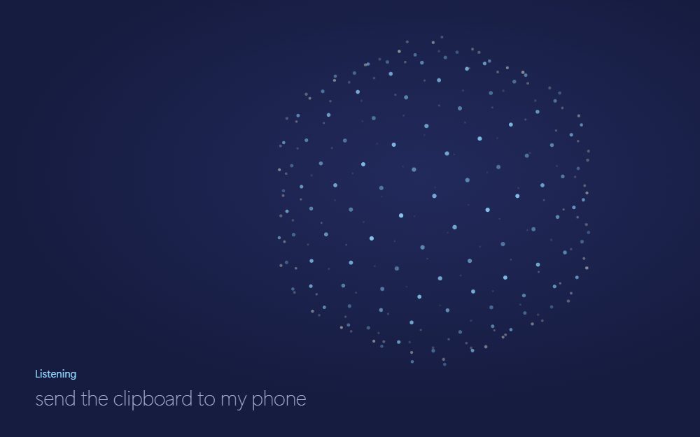

Six ways Jarvis could look
Each page plays a short scripted run: Jarvis hears "send the clipboard to my phone", asks before sending, sends it, then fails to find a phone that is not paired. Pick any state yourself from the buttons at the bottom of a page.

Reactor
Steel rings, a turning aperture, and one warm core. The film-like one.

Orb
A soft shape that changes colour and moves with your voice, with the words set large.

Edge glow
The edge of the screen lights up and a small caption sits above the taskbar, so your work stays in view.

Terminal
jarvis chat as the whole interface: every state is a line you can read back.

Pill
A small capsule above the taskbar that grows only as much as each state needs.

Constellation
A globe of stars that leans in to listen, spins to think, and forms a ring while it waits.
On any page: 1 to 7 pick a state, Space pauses or plays the run, and "Use my microphone" makes listening follow your real voice. The pages make no network requests, and the microphone's sound never leaves the page.